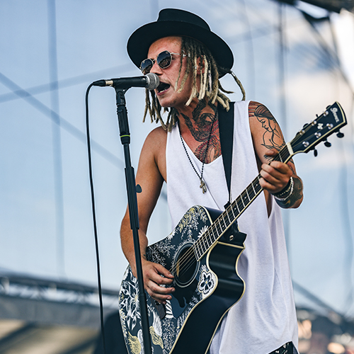

<!DOCTYPE html>
    <html lang="cs"></html>
<head>
    <link rel="icon" href="favicon.ico" type="image/x-icon">
    <meta charset="UTF-8">
    <meta http-equiv="X-UA-Compatible" content="IE=edge">
    <meta name="viewport" content="width=device-width, initial-scale=1.0">
    <link href="style.css" rel="stylesheet">
    <title>Vojtěch Drahokoupil - Oficiální Stránka</title>
    <script src="https://kit.fontawesome.com/2f2b626271.js" crossorigin="anonymous"></script>
</head>
<body>
<div class="header">

    <div class="container">
        <nav>
            
            <ul id="sidemenu">
                <li><a href="#header">Doma</a></li>
                <li><a href="#about">O mně</a></li>
                <li><a href="#services">Hudba</a></li>
                <li><a href="#portfolio">Koncerty</a></li>
                <li><a href="#broadway">Divadlo Broadway</a></li>
                <li><a href="#contact">Kontakt</a></li>
                <i class="fa-solid fa-xmark" onclick="closemenu()"></i>
            </ul>
            <i class="fa-solid fa-bars" onclick="openmenu()"></i>
        </nav>
        <div class="header-text">
            <h1><span>Vojtěch Drahokoupil</span></h1>
            <h2>Zpěvák, songwriter a herec</h2>
            <p>Pokud máte rádi fajn muziku, která je dělaná poctivě a srdcem, tak jste tu správně! Dejte vědět, jak se vám nové songy líbí. </p>
        </div>
            <div class="btn-box">
                <a href="https://www.petrinova.cz">Booking</a>
                <a href="#">E-shop</a>
            </div>
            <div class="social-icons-1">
                <a href="https://www.facebook.com/vojtech.drahokoupil.7"><i class="fa-brands fa-facebook"></i></a>
                <a href="https://www.youtube.com/channel/UCVu7VYOrwRWLuXhxHau8MlQ"><i class="fa-brands fa-youtube"></i></a>
                <a href="https://www.instagram.com/vojta_d_official/"><i class="fa-brands fa-square-instagram"></i></a>
                <a href="https://open.spotify.com/artist/0tVjlWD8PdGtsYMdKwj7r5?si=YyqJcCU9TBisNEThOAMPDg"><i class="fa-brands fa-spotify"></i></a>
            </div>
    </div>
</div>
<!-- about -->
<div id="about">
    <div class="container">
        <div class="row">
            <div class="about-col-1">
                
            </div>
            <div class="about-col-2">
                <h1 class="sub-title">O mně</h1>
                <p>Jmenuji se Vojta a už ve 12 letech jsem věděl, že udělám všechno proto, abych mohl psát muziku, koncertovat a naplno žít jen a jen muzikou. Teď je mi 28 let a právě vyšlo moje první album POCITY. Budu moc rád, když si ho poslechnete, ať už na Spotify nebo YT.
                    Momentálně mám připravenou kapelu z těch nejlepších psů (muzikantů), který jsem do teď na své cestě poznal.<br><br>Budu moc rád, když se potkáme na koncertě, v divadle nebo když mě jen podpoříte tím, že zakoupíte merch. Nic z toho prosím nedělejte, dokud si nepustíte moje album POCITY, alespoň dvakrát za sebou. 
                    </p>
                <div class="tab-titles">
                    <p class="tab-links active-link" onclick="opentab('skills')">Diskografie</p>
                    <p class="tab-links" onclick="opentab('education')">Můj příběh</p>
                </div>
                <div class="tab-contents active-tab" id="skills">
                    <ul>
                        <li><span>Album - POCITY</span><p><br>1. Bosí v trávě (V. Drahokoupil, J. Vidasov)<br>2. Ležíš na mně (V. Drahokoupil, V. Vidasov)<br>3. Pocit (Tereza Mašková, V. Drajokoupil, V. Vidasov)<br>4. Hlavou proti zdi(V. Drahokoupil, J. Vidasov, P. Harzam)<br>5. Co víc si přát (V. Drahokoupil, J. Vidasov, P. Soukup)<br>6. Děj se co se má dít (V. Drahokoupil, J. Vidasov)<br>7. Harampádí (V. Drahokoupil, J. Vidasov, P. Harazin)<br>8. Každej z nás (V. Drahokoupil, J. Vidasov)<br>9. Můrám (J. Vidasov)<br>10. Poslední přání (V. Drahokoupil, J. Vidasov)</p></li>
                    </ul>
                </div> 
                <div class="tab-contents" id="education">
                    <ul>
                        <li><span>1997-2023</span><p><br>Můj příběh začal 23 let zpátky, když mi bylo 5 let, tehdy jsem začal hrát na svůj první hudební nástroj - Piano. Můj otec hrál v bluegrassové kapele Modrotisk na basu, a tak jsem měl už od malička možnost být při zkouškách, kde jsem se mohl dotýkat nástrojů kdykoli jsem chtěl. Už tehdy mě zajímala pouze muzika. Byl jsem tím úplně posedlej. Velmi záhy po pianu jsem přidal další nástroje, které jsem věděl, že jsou potřeba k založení kapely a vydání první písničky. Samozřejmě k tomu trochu málo patřila i vidina balení holek, ale o tom někdy na baru.</p></li>
                    </ul>
                </div> 
            </div>
        </div>
    </div>
</div>
<!--------------services------->

<div id="services">
    <div class="container">
        <h1 class="sub-title">Hudba</h1>
        <div class="services-list">
            <div>
                
                <h2>Bosí v trávě</h2>
                <p></p>
                <a href="https://open.spotify.com/track/1gRFlLnW2z3G7UP8L1zmwo?si=c847930f7c9c4e82" class="listen"><p>Poslechnout na Spotify</p></a>
            </div>
            <div>
                 
                <h2>Žít tady a teď</h2>
                <p></p>
                <a href="https://open.spotify.com/track/3ZSDpGB3WXrBmYVKzr0DPj?si=cae092e1dd024c5a" class="listen"><p>Poslechnout na Spotify</p></a>
            </div>
            <div>
                
                <h2>Okno mé lásky</h2>
                <p></p>
                <a href="https://open.spotify.com/track/63Ck2UZ9OdKXjH23xAg4r3?si=13ad213677844291" class="listen"><p>Poslechnout na Spotify</p></a>
            </div>

        </div>
    </div>
</div>


<!------------portfolio---------->

<div id="portfolio">
    <div class="container">
        <div class="concerts-text"><h1> Nadcházející Koncerty</h1></div>
        <div class="work-list">
            <div class="work">
                
                <div class="layer">
                    <h3>Praha - Lucerna</h3>
                    <p>19.4.2024</p>

                </div>
            </div>
            <div class="work">
                
                <div class="layer">
                    <h3>BRZY OZNAMÍME</h3>
                    <p>Tour 2024</p>

                </div>
            </div>
            <div class="work">
                
                <div class="layer">
                    <h3>BRZY OZNAMÍME</h3>
                    <p>Tour 2024</p>

                </div>
            </div>
        </div>
        
</div>


<!------------Broadway------------>


<div id="broadway">
    <div class="container">
        <div class="row-1">
            <div class="title-b">
                
            </div>
            <div class="text-b">
                <h1 class="sub-title">Divadlo Broadway</h1>
                <p>Divadlo Broadway je mým domovem ve světě jevištních prken. První muzikál jsem ovšem dělal ve Fóru Karlín, kde jsem začínal jako Romeo v muzikálu Romeo a Julie. Od té doby mám za sebou asi 6 muzikálů, ve kterých jsem ztvárnil hlavní role. </p>
                <h2>Termíny</h2>
                <div class="tab-contents-1">
                    <ul>
                        <li><span>1.11.2023</span><br>OKNO MÉ LÁSKY - DAVID </li>
                        <li><span>7.11.2023</span><br>OKNO MÉ LÁSKY - DAVID </li>
                        <li><span>22.11.2023</span><br>MUŽ SE ŽELEZNOU MASKOU - LUDVÍK/FILIP"</li>
                    </ul>
                </div> 
                <div class="btn-box-2">
                    <a href="#">Vstupenky</a>
                </div>
            </div>
        </div>
    </div>
</div>


<!------------contact------------>

<div id="contact">
    <div class="container">
        <h1>Kontakt</h1>
            <div class="contact-list">
                <div> 
                    <h2>Agentura Petřínová s.r.o.</h2>
                    <p class="name">Daniela Petřínová</p>
                    <p><i class="fa-solid fa-paper-plane"></i>daniela@petrinova.cz</p>
                    <p><i class="fa-solid fa-square-phone"></i>+420 777 681 088</p>
                </div>
                <div> 
                    <h2>Spolupráce</h2>
                    <p class="name">Vojtěch Drahokoupil</p>
                    <p><i class="fa-solid fa-paper-plane"></i>vojtech.draho@gmail.com</p>
                </div>
            </div>
           
        </div>
    </div>
    <div class="copyright">
        <p>Copyright © Made by Omgjxnas</p>
    </div>
</div>


<script>
    var tablinks = document.getElementsByClassName("tab-links");
    var tabcontents = document.getElementsByClassName("tab-contents");

    function opentab(tabname){
        for(tablink of tablinks){
            tablink.classList.remove("active-link");
        }
        for(tabcontent of tabcontents){
            tabcontent.classList.remove("active-tab");
        }
        event.currentTarget.classList.add("active-link");
        document.getElementById(tabname).classList.add("active-tab");
    }
</script>


<script>

    var sidemenu = document.getElementById("sidemenu");
    function openmenu(){
        sidemenu.style.right = "0";
    }
    function closemenu(){
        sidemenu.style.right = "-200px";
    }

</script>


</body>
</html>
